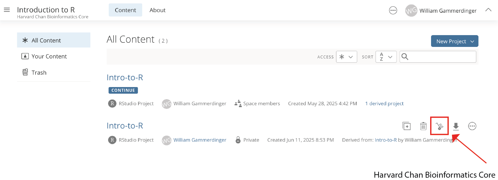
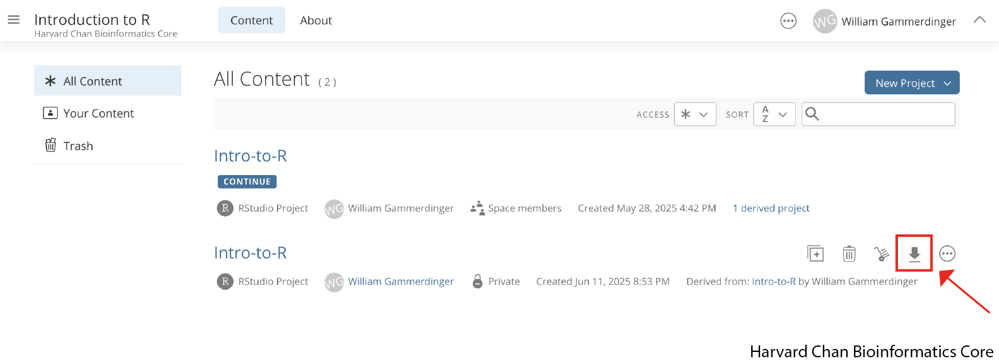

Transferring Project from Posit Cloud
Approximate time: 15 minutes
Learning Objectives
- Transfer data from the shared workspace to a local RStudio Project or personal Posit Cloud workspace
Options for Transferring RStudio Project
The Introduction to R Workspace on Posit Cloud that we have been working from throughout this workshop is managed by the Harvard Chan Bioinformatics Core. This provides us a useful learning environment to work within for training purposes, but now that we are concluding the workshop you may like to take your RStudio project with you. WARNING: If you do not transfer your project by the end of today, it will be deleted.
You have two options for doing this:
Transfer the project to your workspace on Posit Cloud where you will be subject to the rules that Posit Cloud places upon your account in terms of computational resources
Transfer your project to your local machine
In the sections below we will demonstrate both approaches.
Transferring RStudio Project to your personal Posit Cloud Workspace
In order to transfer the RStudio Project from the Harvard Chan Bioinformatics Core’s Introduction to R Workspace to your own workspace, go to the workspace page and click on the moving dolly icon.

Next, select “Your Workspace” and click “OK”. You can navigate to your workspace now and see your project there. One advantage of transferring the project to your Posit Cloud workspace rather than locally is that the installed packages will remain installed following the transfer.
Downloading the RStudio Project for local use
Alternatively, you can also download the RStudio Project and open it locally in RStudio. In order to be able to open the RStudio Project locally, you will need to have both R and RStudio installed on your local computer. You can download them from the links below:
One advantage to this method is that you will not be limited in your computational resources like you would be on Posit Cloud. However, the disadvantage is that the installed packages will not transfer. This is because the packages were compiled against the operating system in Posit Cloud and not your local operating system.
In order to download the RStudio project, click on the download icon in the workspace corresponding to the Introduction to R project.

This will prepare the download and then let you know that the project is ready to download.
Click the “Download” button and a .zip compressed directory will be downloaded. Uncompress the directory, enter the directory and double-click on the R project file (the file with the .Rproj extension). This should open up RStudio and allow you to work on the RStudio Project locally.